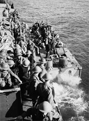
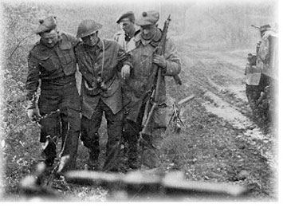

|
|
Kit Shop | Downloads | Links | Site Map | Contact Us |
|
THE SECOND WORLD WAR 1939-1945Mobilization and the Road to WarWith the approach of summer 1939, war was again close at hand. Between 1936 and 1939 Germany flagrantly violated the territory of most of its neighbours in an effort to gain leibensraum (living space). Poland was invaded on 1 September 1939. Britain and France declared war on Germany on 3 September. Canada’s declaration followed on the tenth, but preparations for war had already begun. The Canadian Active Service Force was formed, and selected units of the Militia were activated. The Government had learned from its mistakes of the previous war, and mobilization proceeded smoothly. The Camerons were officially notified of the impending war on 1 September when ordered to mobilize and recruit to a strength of 807 all ranks. Within seventeen days the Battalion was at full strength. With a general mobilization barrack space was at a premium. For the first two months the Camerons returned to their homes at the end of each day. Temporary quarters were eventually found at the Robinson Store on Main Street. In April 1940 the Cameron turned in their kilts, and the new battledress trousers and jackets were issued. They would not fight in the traditional highland garb as had their fathers twenty-five years earlier. On 24 May, the Battalion moved to Camp Shilo, Manitoba. At Shilo, unit training from section to battalion level took place as well as brigade exercises. The 2nd Battalion was formed as a component of the reserve army. By late August it was almost at full strength. Its role throughout the war was that of home defense and reinforcement training. The 1st Battalion embarked for overseas on 16 December 1940, arriving in the UK on Christmas Eve. At Cove, Hampshire the Battalion was assigned a defensive task adjacent to the Aldershot area. 1941-43 THE DIEPPE RAIDNumerous training exercises and inspections highlighted 1941. By July the Camerons were in the Newhaven area of the channel coast near Sussex, in a coastal defense role. On 19 August 1942 the Camerons took part in a large-scale raid on the French port city of Dieppe. The Camerons landed at Pourville Beach. Their objectives were the Dieppe-Saint Aubins airfield; battery 265 at Rouxmosnel-Calment and a suspected German divisional headquarters at Arques-la-Battaile. Although the Camerons made the deepest penetration of the day, the main landing at Dieppe had been unsuccessful, and as German resistance stiffened the Battalion was unable to carry its objectives. Of 503 Camerons on the raid, 346 were casualties: 60 Killed in action; 8 died of wounds after evacuation; 167 prisoners of war (8 of whom died of wounds). Of the 268 returning to England, 103 were wounded. The concept and value of the raid is a matter of controversy. However, the lessons learned would be useful in planning the Normandy invasion- still two years away. For the next two years the objective was to rebuild and maintain a battle-fit fighting unit for the ultimate invasion of Europe. THE INVASION AND THE BATTLE FOR NORMANDYOn 6 June 1944 the Allies invaded German-occupied France. The Queen's Own Cameron Highlanders of Canada, unlike their Cameron Highlanders of Ottawa cousins, were not "a Normandy D-Day unit". The Camerons of Canada landed at Graye-sur-Mer on 07 July 1944 as part of 6 Brigade, 2nd Canadian Division, and took up positions first won by the Royal Winnipeg Rifles at Carpiquet. It was here that they were subjected to artillery and mortar fire for the first time since the Dieppe Raid. During this time the British army conducted diversionary operations to draw German armoured troops away from the west end of the bridgehead while developing a threat towards Falaise. These operations assisted the Americans in breaking out of the bridgehead. The Camerons joined in these operations on 20 July at St. Andre-sur-Orne followed by subsequent actions at St. Martin-de-Fontenay (24/25 July). As the Americans successfully broke out of the bridgehead and drove south and then east, British and Canadian forces attacked toward Falaise. Thus began a large encirclement, which ultimately destroyed much of the German Seventh Army. The Camerons of Canada part in the Falaise operations begun on 7 August with an assault on Fontenay le Marmion (Operation Totalize). On 13 August the Battalion cleared pockets of enemy resistance west of the River Laize then seized a bridgehead at Clair Tizon. On 15 August at La Cressioniere three counterattacks were repulsed. On 16 August 6th Brigade entered Falaise, which fell on the following day. The gap between the British and U.S. armies was finally closed on 21 August. THE PURSUIT ACROSS FRANCE, THE CHANNEL COAST AND THE SCHELDTWith the German army in Normandy beaten, the Allies swung eastward in pursuit of the escaping enemy racing toward the Seine. At Vermontiers two Cameron scouts captured the German commander and his staff but, as the town had not yet fallen, were forced to hide out with their prisoners until the advance caught up. At Orbec the Battalion came under fire from across the Orbec River. The village was outflanked, and they crossed the Orbec River at a different location...The Risle River south of Breonne was crossed on 25 August in operations to cease its bridges. In the final drive for the Seine the Camerons attacked through the Foret de la Londe, which covered Rouen and its Seine River crossings. Here they met strong opposition. Bitter fighting followed with heavy casualties on both sides. On 30 August the Germans withdrew. The Camerons entered Rouen the following day to the cheers of its remaining inhabitants. The allied advance continued across France with the Canadians on the left flank. To them fell the task of clearing the channel coast. The Camerons began their motorized move to the coast on 1 September, entering Dieppe, wisely abandoned by the Germans without a fight. On 6 September the battalion moved up the coast past Calais into Belgium, and occupied Furnes. Swinging back toward the coast on the 10th they advanced southwest to LaPanne and then northeast to Dunkirk. The battalion went into action at Braydunes, an outpost of the Dunkirk defenses, where D Company occupied the crossroads. Cut off for two days, they managed to hold their objective until relieved on 15 September. By the end of September the channel coast had been cleared. On 4 September the port of Antwerp was captured. Its use as a major supply base was essential to the allies. However, it could not be utilized while the enemy controlled the banks of the Scheldt Estuary, which led from the port to the North Sea. The Camerons moved to the Antwerp-Turnhout canal on 23 September. For the next month they faced danger, hardship and miserable wet weather. They took part in operations at Sternhoven, Camp de Brasschaet, Woensdrecht, Beveland canal and Goes. By 8 November resistance ended. On the 29th the first Allied convoy sailed up the Scheldt to Antwerp. With the enemy south of the Maas River defeated, the Canadians moved northeast into the Nijmegan Salient, along the German-Dutch frontier, where they dug in for the winter. The Camerons took up positions along the edge of the Reichwald, the northern hinge of the Seigfried Line, near Mook on 8 November. Movement by day was impossible as the enemy held positions only 50 to 200 yards. THE RHINELANDOperation Veritable the clearing of the Rhineland--commenced on 8 February 1945. The Camerons joined in the second phase, Operation Blockbuster on 26 February. The Battalion objective was Calcar Ridge “...all unit objectives were taken and held against counterattack. By midday on the 26th the 6th Brigade task in phase one of Blockbuster had been successfully completed. It was an excellent example of what detailed planning, a high standard of training and excellent morale can accomplish.” During the Battle for Xanten, the Regiment received its second Victoria Cross nominee. Major David Rodgers was recommended to receive the Victoria Cross for his actions on 23 February 1945 at Goch-Calcar Road. The citation was approved at every level until it reached 21st Army Group where Field Marshall Montgomery downgraded the award to an immediate DSO. The final phase of Blockbuster, the Battalion participated in the 2nd Division attack on the Hochwald. On 5 March, after 5 days of bitter fighting, the Camerons dug in on the edge of the Hochwald. The following day the Battalion launched an attack to prevent the enemy consolidating in front of Xanten, where they were withdrawing over the Rhine. By 10 March all enemy resistance west of the Rhine had ceased. HOLLAND, GERMANY AND VICTORYNext came the task of clearing northern Holland. The Camerons, having crossed the Rhine, advanced north -reaching Netterden, Holland on 29 March. Netterden was surrounded the following day. On the 31st the Battalion attempted to clear Velthutten but was unsuccessful. The following morning the enemy withdrew. Steenderen was captured on 4 April and on the 6th Olden, both without encountering opposition. Next, a bridgehead was established on the northern bank of the Schipbeek canal. Boarding troop-carrying vehicles on 10 April, the Battalion took part in 2nd Division quick advance north to Groningen. Groningen was cleared on the 16th. Second Division now swung east into Germany. The Camerons reached Wildeshausen on 21 April. Two days later a German battle group put up stiff resistance at Kirchatten. On 21 April operations to clear the Oldenberg forest got underway. By the end of April the Battalion was moving through scattered resistance toward its final objective, Oldenberg, which was reached on 3 May. The following evening the long awaited announcement came. German forces in northwest Europe would surrender at 0800 on the 5th. The news was received with great joy, but also with sadness as comrades remembered those lost in the drive from Normandy to Germany. Garrison duty kept the Battalion in Germany and Holland until the end of September when they returned to England. The Camerons lift the U.K. onboard the RMS. Queen Elizabeth on 13 November. On the evening of November they arrived at the CPR station in Winnipeg. Thousands had gathered to meet them, at to the strains of “The March of The Cameron Men,” they paraded through the rotunda. Thus ended the Regiments part in World War Two. Decorations and Awards to members of the Regiment WWII |

| © 2006 - The Queen's Own Cameron Highlanders of Canada |